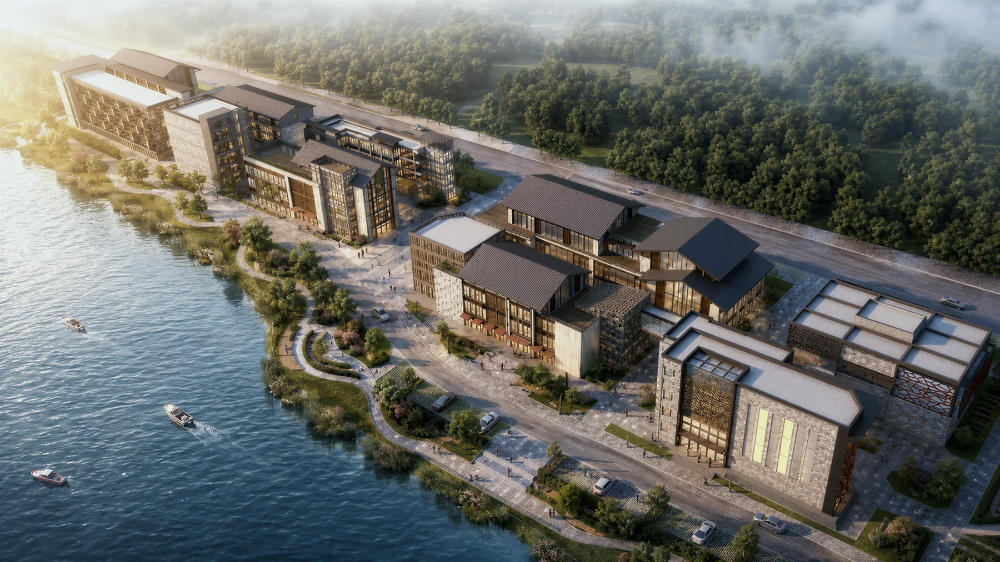
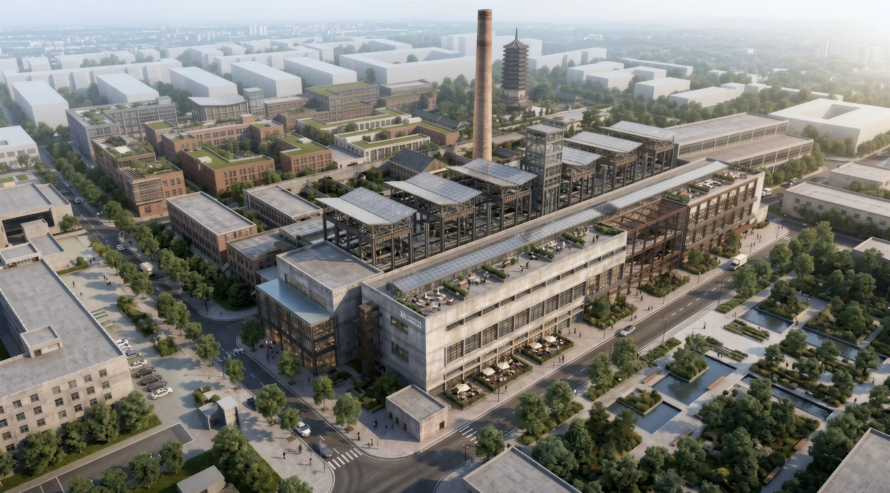
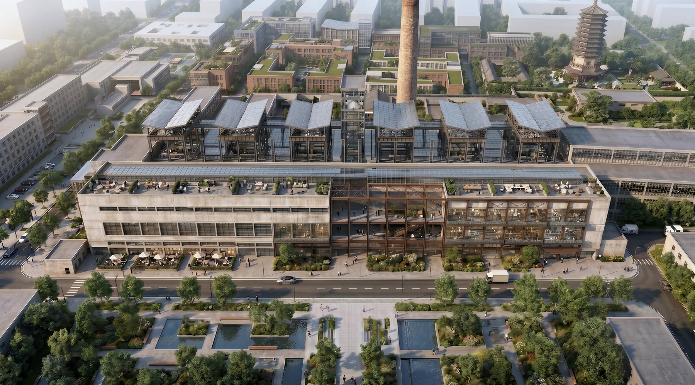

Problem
项目问题
建筑图像中包含构件、体量、材料、流线、气候和构造逻辑，普通生成工具难以把这些信息转化为可编辑模型或清晰分析图。
成果 PPT 展示
Component extraction, mass simplification, Image-to-BIM/IFC, and analytical diagramming

Problem
建筑图像中包含构件、体量、材料、流线、气候和构造逻辑，普通生成工具难以把这些信息转化为可编辑模型或清晰分析图。
Workflow
Outcome
形成覆盖图像理解、模型生成、分析图表达和渲染输出的建筑 AIGC 工作流作品集。
Gallery

